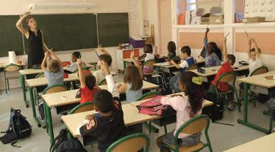

Individual Oral · Worked example
A real oral, recorded and marked.
Every model presentation on the Oral Prep page is written to sound perfect. This one isn't. A friend sat a full Individual Oral cold — one image, two questions, ten-ish minutes — and it got marked exactly the way yours will be. Listen to it, then read exactly where the marks were won and lost.
The visual stimulus
Imagine you're shown this photo
This is the actual image Siddharth was given, with the two questions his examiner asked once the presentation was over. Theme: Experiences — school and education.

The visual stimulus given for this oral.
The two questions asked
Décris ton école.
Describe your school.
Est-ce que l'école dans ton pays est similaire à l'école en France ?
Is school in your country similar to school in France?
The recording
Siddharth describing the image and answering both questions, unscripted. Worth listening to in full before you read the feedback below — try marking it yourself first.
Individual Oral — sample recording
Siddharth Seethepalli · French Ab Initio SL
↓ Download the audio (.m4a, 7.5 MB)Examiner-style feedback
Full written feedback against all four IB Individual Oral criteria, with the overall mark and a breakdown of what earned marks and what held it back.
Criterion A — Language
8/12Mostly effective and accurate French, with vocabulary appropriate to the visual stimulus and to school and education more broadly. He uses opinion and linking structures like à mon avis, parce que, je pense que and comme, and attempts more complex grammar when comparing France and India.
But there are frequent errors with gender, articles, prepositions, and sentence construction. Communication stays clear throughout — the errors rarely block understanding — but their frequency is what keeps this out of the 10–12 band.
What worked
- Vocabulary consistently relevant to the topic
- Reasonable range around school and education
- Linking and opinion phrases used naturally
- Attempted complex structures, not just simple sentences
What to fix
- Gender and article agreement
- Prepositions — à, au, en, dans
- Stop translating English expressions directly
- Widen the range of sophisticated structures
What he said → what he meant
| He said | He meant |
|---|---|
| la mathématiques | les mathématiques |
| Au gauche | À gauche |
| Au fond du sol | Au fond de la salle |
| un problème du sport très fort | une forte culture sportive |
| le coutume du sport | la culture sportive |
| En école | À l'école |
| J'ai été à cette école depuis deux ans | Je suis dans cette école depuis deux ans |
| Pour faire un dérèglement culturel | Pour faire une comparaison culturelle |
Sits in the 7–9 band: vocabulary is appropriate, structures vary, errors rarely interfere with communication — but the volume of basic mistakes keeps it out of 10–12.
Criterion B1 — Message: Visual Stimulus
5/6Consistently relevant to the image, with a clear read of what's shown — the students, desks, blackboard, shelves, bags, hands raised. He goes beyond listing objects: he interprets the atmosphere as calme et studieuse and reads the scene as une journée normale à l'école, then connects it outward to education's importance, school subjects, social skills and the French rentrée scolaire.
The gap is precision in the cultural link. Statements about France lean general and a little tentative — je voudrais parler du système scolaire en France — rather than sharp, specific comparison.
What worked
- Wide range of relevant detail from the image
- Moved past description into interpretation
- Explicit connection to the target culture
- Stayed on the stimulus throughout
What to fix
- Go further with the cultural comparison
- Use specific facts about French schools, not generalities
- Explain why the difference matters, not just that it exists
5/6 — consistently relevant with real interpretation and a genuine target-culture link. One away from full marks because the cultural analysis stays fairly surface-level.
Criterion B2 — Message: Conversation
5/6Both questions get full, developed answers rather than one-liners. For Décris ton école, he covers location, subjects, university destinations, sport, basketball, school culture, and his relationships with students and teachers — real breadth. For the comparison question, he identifies concrete differences: public versus private schooling, perceptions of prestige, and sporting culture (football and cricket versus basketball).
The weak point: some claims about France are hedged or underdeveloped — he opens with je ne connais pas, je ne sais pas beaucoup des écoles en France before making several claims anyway, which undercuts them.
What worked
- Answered both questions directly and fully
- Substantial personal detail about his own school
- A genuine India–France comparison attempted
- Covered several angles, not just one
What to fix
- Back comparisons with specific examples
- Don't undercut claims by flagging uncertainty first
- Use structures: tandis que, contrairement à, alors que
- Push more depth into the second answer especially
5/6 — consistently relevant and developed with real breadth. A 6 needs that same breadth with stronger, more confident development throughout.
Criterion C — Interactive Skills
5/6Sustained comprehension throughout — he understands the questions and responds independently, without needing them reformulated, and contributes real information rather than minimal answers. He holds the thread of the conversation even while making grammar mistakes.
What's missing is fluency and naturalness under pressure: some hesitation shows, especially discussing France, and a few sentences are visibly built from English first and translated on the fly.
What worked
- Maintained communication throughout
- Responded independently to both questions
- Clear comprehension, no reformulation needed
- Extended answers without heavy prompting
What to fix
- More spontaneous, less hesitant delivery
- Vary sentence structures rather than repeating patterns
- Drill common structures until they're automatic
- Use more natural conversational linking phrases
5/6 — comprehension and interaction are consistently sustained with independent contributions. The very top band needs more natural, fluent delivery under pressure.
How to use this before your own oral
Mark it yourself first. Look at the image, read the two questions, and write down what you'd say — before listening or reading the feedback. Compare your instinct against the actual marks.
Listen for the errors, not just the answers. Every mistake in the corrections table above is one you can hear in the recording. Try to catch them before you check the table.
Notice what an 8/12 on Language actually sounds like. This isn't a broken answer — it's a clear, confident one with real errors in it. That's most people's actual ceiling without deliberate grammar review, and it's worth knowing what it sounds like before you're the one being recorded.
Steal the structure, not the sentences. The shape of his answers — description, then theme, then a specific cultural comparison — is exactly the shape yours should take. See Describing an image and The target-culture link for the framework behind it.
Tip
- Grade yourself against the real IB criteria before you check his marks — it trains the same judgement the examiner is using on you.
- A 23/30 is a genuinely strong, clearly communicative oral. It's not a cautionary tale — it's a realistic target with real errors still in it.